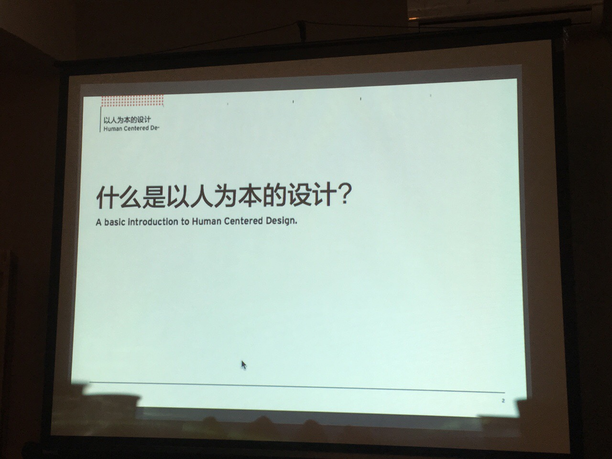
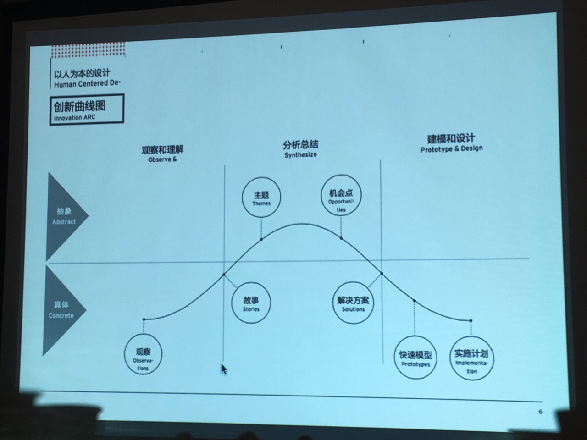
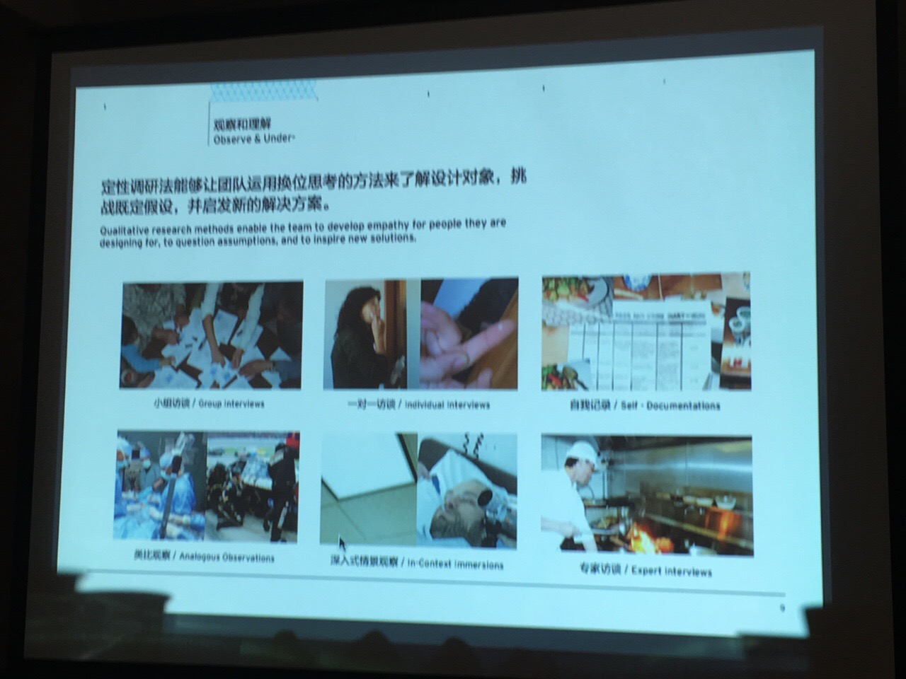

Toby在知名的商业创新咨询公司IDEO工作过四年，火箭蛙线下聚会给大家介绍“以人为本的设计”，以前是给客户讲的PPT，收费很贵滴，征求过意见，她讲的内容可以拍照和公开。 其中有个例子谈到帮助化妆品公司做访谈，发现中国三四线城市消费者会购买昂贵护肤品，比如一千多的润肤乳，但使用得很节省，每次只用一点点儿，搭配便宜的护肤品一起用。化妆品公司于是推出组合，专门搭配昂贵护肤品的便宜品牌，大卖。
我之前所在的IT圈是#歧视#高龄人士的。最近投资领域这种现象更常见，刚毕业的学生受VC追捧，我这样人过中年才出来创业的，会受到漠视或者歧视。包括创业人士自己都这么认为，70后的创业者被洗脑认为必须找到90后，95后的合作者才能成功。
昨晚在线下沙龙做爱美医生的分享。有位同行见识颇广，几乎任何话题都能点评几句，还都蛮有道理。他知道我们几个创始人都是70后，就说这个项目没戏，必须找90后的合伙人，他自己就是是70后，我就心里暗暗笑笑吧。因为我从来不以年龄来定义自己，我只要脑子一直保持着更新，00后我也敢冒充。@Ada李力:我之前所在的IT圈是#歧视#高龄人士的。最近投资领域这种现象更常见，刚毕业的学生受VC追捧，我这样人过中年才出来创业的，会受到漠视或者歧视。包括创业人士自己都这么认为，70后的创业者被洗脑认为必须找到90后，95后的合作者才能成功。
 做光子嫩肤有风险么？
做光子嫩肤有风险么？